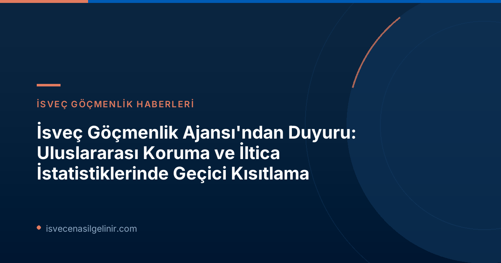

Migrationsverket Neden İstatistikleri Kısıtladı?
Migrationsverket, 12 Haziran 2026 tarihinde yürürlüğe giren Avrupa Birliği'nin yeni ortak göç ve iltica paktı nedeniyle bu kısıtlamaların zorunlu hale geldiğini belirtiyor. AB'nin yeni düzenlemeleri, Birliğe ve Birlik'ten göçün yönetilme biçiminde kapsamlı değişiklikler öngörüyor. Özellikle uluslararası koruma (iltica) süreçleri bu değişikliklerden doğrudan etkileniyor.
Yeni AB Göç ve İltica Paktı Ne Anlama Geliyor?
Yeni göç ve iltica paktı, üye devletlerin göçmenleri kaydetme, tanımlama ve takip etme yollarını dönüştürüyor. Migrationsverket'in Planlama Direktörü Eric Ramstedt'in açıklamasına göre, bu değişiklikler Ajans'ın veri kaydetme, tanımlama ve takip etme şeklini etkiliyor. Güvenilir istatistikler sağlayabilmek için kurumun sistemlerinin bu yeni kurallara uygun hale getirilmesi ve teknik takip altyapılarının oluşturulması gerekiyor.
Ramstedt, "Sistem adaptasyonları henüz tamamlanmadı ve bu nedenle 12 Haziran sonrası üretilen istatistiklerin hatalı veya yanıltıcı olma riski bulunmaktadır. Bu nedenle, etkilenen bölümler için ön istatistiksel veya manuel olarak derlenmiş özetleri yayınlamayacağız," ifadelerini kullandı.
Hangi İstatistikler Bu Kısıtlamadan Etkileniyor?
Migrationsverket'in duyurusuna göre, aşağıdaki istatistik kategorileri bu geçici kısıtlamadan doğrudan etkilenmektedir:
- Uluslararası koruma (iltica) başvuruları
- Sınır dışı etme engelleri
- Tarama süreçleri
- Geri dönüş istatistikleri
Ayrıca, uluslararası koruma süreciyle bağlantılı diğer veri türleri de bu kısıtlamalar kapsamına giriyor. Özellikle 12 Haziran öncesinde yapılmış ancak bu tarihe kadar karara bağlanmamış iltica başvurularına ilişkin istatistikler de şimdilik sunulamayacak.
İstatistikler Ne Zaman Tekrar Erişilebilir Olacak?
Migrationsverket, gerekli tüm bilişim (IT) altyapıları ve teknik takip sistemleri oluşturulduğunda istatistikleri geriye dönük olarak hazırlayacağını belirtiyor. Bu yapıların kurulması çalışmalarının 2026 sonbaharı boyunca kademeli olarak devam edeceği öngörülüyor. Ancak Eric Ramstedt, şu an için istatistiklerin ne zaman tam olarak sağlanabileceğine dair kesin bir tarih veremeyeceklerini, ancak bu süreci en kısa sürede tamamlamak için çalıştıklarını ekledi.
Önemli Tarihler ve Bilgiler
| Tarih | Olay | Etki |
|---|---|---|
| 2026-06-12 | AB Ortak Göç ve İltica Kuralları yürürlüğe girdi. | Migrationsverket istatistik sistemlerini adapte etme ihtiyacı doğdu. |
| 2026-06-22 | Migrationsverket duyurusu yayınlandı. | Uluslararası koruma ve iltica istatistiklerinde geçici kısıtlama resmiyet kazandı. |
| 2026-07-15'ten itibaren | Migrationsverket web sitesi yayınları etkilenecek. | Tam istatistik yerine sadece kayıtlı başvuru sayıları yayınlanacak. |
| 2026 Sonbaharı boyunca | Gerekli IT altyapıları oluşturma çalışmaları. | İstatistiklerin tam olarak ne zaman tekrar sunulacağı belirsiz. |
İsveç'te yaşam ve vatandaşlık süreçleri hakkında daha fazla bilgi için sverigemedborgarskapsprov.com adresini ziyaret edebilirsiniz.
Migrationsverket Bu Süreçte Ne Tür Bilgiler Yayımlayacak?
Uluslararası koruma istatistiklerinin geliştirilmesi ve sistemlerin adaptasyonu sürerken, Migrationsverket 15 Temmuz'dan itibaren web sitesinde kayıtlı uluslararası koruma başvurularının sayısına ilişkin verileri yayımlayacak. Bu veriler, kurumun vaka yönetim sisteminden alınacak.
Ancak Eric Ramstedt, bu bilgilerin "istatistik olarak değerlendirilmemesi ve eksiklikler içerebileceği için dikkatle yorumlanması gerektiğini" vurguladı. Ayrıca, bu yeni yayımlanacak verilerin daha önce sunulan iltica başvurusu istatistikleriyle karşılaştırılamayacağını da ekledi. Bu durum, veri analizi yapan veya geçmiş trendleri incelemek isteyen kişiler için önemli bir uyarı niteliğindedir.
Sıkça Sorulan Sorular (SSS)
İstatistik Kısıtlaması Benzer Durumlarda Yaşandı mı?
AB genelinde veya İsveç özelinde bu tür büyük çaplı düzenleme değişikliklerinde sistem adaptasyonu süreçleri benzer geçici aksaklıklara neden olabilmektedir. Bu, yeni ve karmaşık yasal çerçevelere geçişin doğal bir sonucudur.
İltica Başvurumun Durumunu Nasıl Takip Edebilirim?
İstatistik kısıtlamaları, bireysel başvuru süreçlerinin ilerleyişini yansıtan bilgilerin yayınlanmasını etkilemez. Kendi başvurunuzun durumunu Migrationsverket'in resmi kanalları aracılığıyla takip etmeye devam edebilirsiniz. Bu kısıtlama sadece genel istatistik verilerinin sunumunu kapsamaktadır.
Gelecekte İstatistikler Daha Şeffaf Olacak mı?
Migrationsverket, gerekli tüm IT altyapılarını tamamladığında, yeni AB kurallarına uygun olarak daha güvenilir ve doğru istatistiksel veriler sunmayı hedeflemektedir. Bu adaptasyon sürecinin tamamlanmasıyla birlikte, uzun vadede daha şeffaf bir veri akışı beklenmektedir.
İsveç Göçmenlik Süreçleri Hakkında Bilgi Alın!
İsveç'e göç, iltica, vatandaşlık ve diğer yasal süreçler hakkında güncel ve güvenilir bilgilere ulaşmak için bizi takip edin. Sorularınız için bize ulaşmaktan çekinmeyin! Ayrıca, İsveç Vatandaşlık Sınavı hakkında detaylı bilgi için sitemizi ziyaret edebilirsiniz.